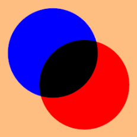

图标选择混合模式。
图标选择混合模式。
Nuke 工作室
允许您在时间轴中执行轨迹之间的合并，例如，在剪辑实例上覆盖徽标而不进入
请参阅 合并操作 有关可用混合模式的完整说明。
注意: 查看器当前将所有 alpha 通道视为预乘，这可能会导致查看器背景被 “添加” 到图像中。
您可以像正常一样向混合轨道添加软效果 (请参见
软效果
有关更多信息) 和混合轨迹与导出操作中的剪辑实例一起包含。请参阅
从 Nuke Studio 导出
和
| 1。 | 在时间线中单击鼠标右键，选择 新轨道 > 新视频轨道混合 ,然后选择要应用的混合模式。 |
在轨道堆栈的顶部添加了一个新的轨道，蓝色表示它将在下面的轨道上混合。
| 2. | 将所需的剪辑实例添加到混合轨迹，就像将任何其他剪辑实例添加到混合轨迹一样。请参阅 将剪辑添加到时间轴 欲了解更多信息。 |
| 3. |
单击并按住
混合
图标选择混合模式。
|
| 4. |
单击
混合
图标来打开和关闭混合。
|
| 1。 |
单击
混合
图标来切换混合,
|
OR
在目标轨迹的标题中单击鼠标右键，然后选择 编辑 > 混合模式 > 启用轨道混合 .

选定的轨道被转换成混合轨道，蓝色表示它将在下面的轨道上混合。
| 2. | 可以向混合轨迹添加剪辑实例，就像向任何其他剪辑实例添加剪辑实例一样。请参阅 将剪辑添加到时间轴 欲了解更多信息。 |
观众显示较高的轨道与下面的轨道混合。
| 3. |
Click and hold the
Blend
icon to select the blend mode.
|
掩蔽 将混合轨迹的效果限制为混合图像中 alpha 通道覆盖的区域。例如，使用 乘 禁用遮罩的混合模式会在非 alpha 区域中乘以背景板，这可能不是您需要的结果。
|
|
|
|
背景轨迹 B . |
混合轨道 一个 . |
|
|
 |
|
一个
乘以
B
与掩蔽
|
一个
乘以
B
与掩蔽
|
See Merge Operations for a full description of the available blend modes.
单击蒙版
 图标打开和关闭 alpha 掩蔽。当为蒙面混合操作创建 Comp 时，蒙版选项也会延续到节点图中:
图标打开和关闭 alpha 掩蔽。当为蒙面混合操作创建 Comp 时，蒙版选项也会延续到节点图中:
|
|
|
|
满二用的比较 乘 禁用屏蔽的合并操作。 |
使用相同的 comp 乘 合并操作，但启用了屏蔽。 |
|
|